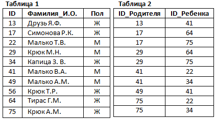
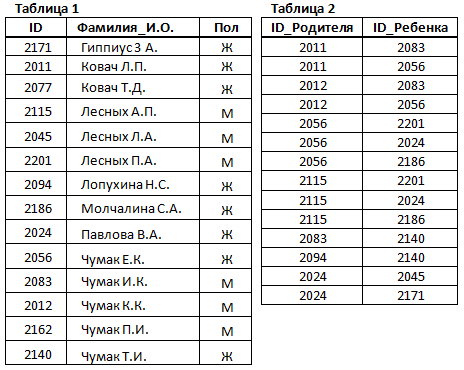
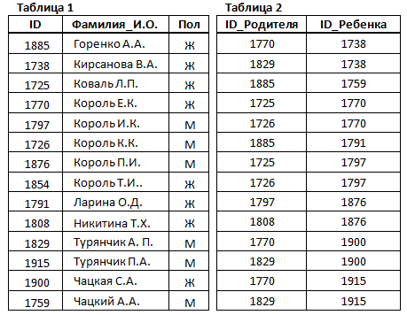
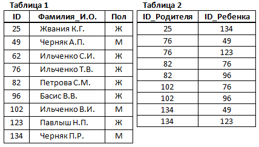
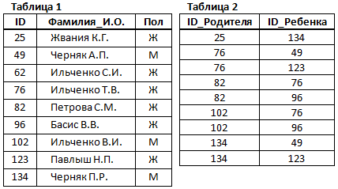
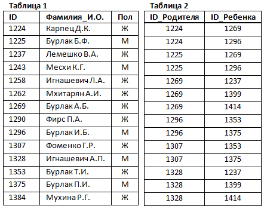
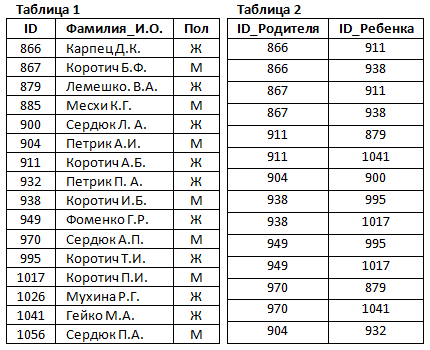
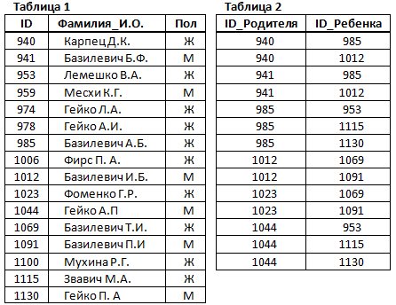
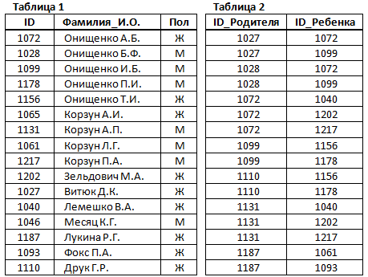
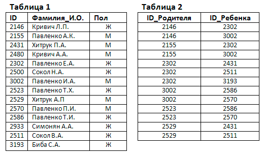

Результаты теста
Платформа для подготовки школьников к ЕГЭ по информатике
Поиск информации в базе данных
1. В фрагменте базы данных представлены сведения о родственных отношениях. Определите на основании приведенных данных, фамилию и инициалы внучки Симоновой Р.К.

Капица З.В.
Крюк А.М.
Крюк Т.Р.
Тирас Г.М.
2. В этом фрагменте базы данных представлены сведения о родственных отношениях. На основании приведённых данных определите фамилию и инициалы правнука Чумака К.К.

Гиппиус 3.А.
Лесных Л.А.
Чумак Е.К.
Чумак П.И.
3. В этом фрагменте базы данных представлены сведения о родственных отношениях. На основании приведённых данных определите фамилию и инициалы дедушки Чацкой С.А.

Коваль Л.П.
Король К.К.
Турянчик А.П.
Чацкий А.А.
4. В этом фрагменте базы данных представлены сведения о родственных отношениях. На основании приведённых данных определите фамилию и инициалы внука Петровой С.М.

Басис В.В.
Черняк А.П.
Павлыш Н.П.
Ильченко С.И.
5. В этом фрагменте базы данных представлены сведения о родственных отношениях. На основании приведённых данных определите фамилию и инициалы внучки Петровой С.М.

Басис В.В.
Черняк А.П.
Павлыш Н.П.
Ильченко С.И.
6. В фрагменте базы данных представлены сведения о родственных отношениях. На основании приведённых данных определите, сколько всего внуков и внучек есть у Карпец Д.К.

Ответ:
7. В фрагменте базы данных представлены сведения о родственных отношениях. На основании приведённых данных определите, сколько всего внуков и внучек есть у Карпец Д.К.

Ответ:
8. В фрагменте базы данных представлены сведения о родственных отношениях. На основании приведённых данных определите фамилию и инициалы бабушки Гейко П.А.

Базилевич Б.Ф.
Гейко А.И.
Гейко Л.A.
Карпец Д.К.
9. В фрагменте базы данных представлены сведения о родственных отношениях. На основании приведённых данных определите фамилию и инициалы дедушки Корзуна П.А.

Витюк Д.К.
Корзун А.П.
Онищенко Б.Ф.
Корзун Л.Г.
10. В фрагменте базы данных представлены сведения о родственных отношениях. На основании приведённых данных определите, сколько прямых потомков (т.е. детей и внуков) Павленко А.К. упомянуты в таблице 1.

Ответ: